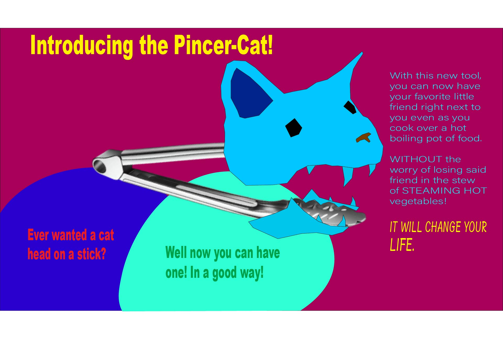

My name is Edwin Caro, I am the first of my family to attend university and come from a hispanic heritage. I am currently in my third year and pursuing an ATEC career.
University of Texas at Dallas
National Honors Society.
Currently Learning Programming.
Digital Artist.
